Materi
Analisa Sistem adalah penguraian dari suatu sistem informasi yang utuh ke dalam bagian-bagian komponen dengan maksud untuk mengidentifikasikan dan mengevaluasi permasalahan , kesempatan , hambatan yang terjadi dan kebutuhan yang diharapkan sehingga dapat diusulkan perbaikannya.
Tahap Analisis merupakan tahap yang paling kritis dan sangat penting, jika terjadi kesalahan di dalam tahapan ini akan menyebabkan kesalahan di tahap selanjutnya.
Hasil analisa sistem: laporan yang dapat menggambarkan sistem yang telah dipelajari dan diketahui bentuk permasalahannya serta rancangan sistem baru yang akan dibuat atau dikembangkan.
Tujuan Analisa Sistem:
- Memberikan pelayanan kebutuhan informasi kepada fungsi manajerial di dalam pengendalian pelaksanaan kegiatan operasional perusahaan.
- Membantu dalam pengambilan keputusan.
- Mengevaluasi sistem yang telah ada.
- Merumuskan tujuan yang ingin dicapai berupa pengolahan data maupun pembuatan laporan baru.
- Menyusun suatu tahap rencana pengembangan sistem.
Hal - hal yang perlu diperhatikan oleh sistem analis:
- Mempelajari permasalahan yang ada secara terinci.
- Menentukan pendekatan yang akan digunakan dalam memecahkan masalah.
- Membuat suatu pertimbangan apakah perlu atau tidak menggunakan cara komputerisasi.
Langkah-langkah dalam melakukan analisa sistem:
- Identifikasi Masalah
- Mengidentifikasi penyebab masalah.
- Analisis Sitem
- Mengidentifikasi solusi dari masalah.
- Analisis Kebutuhan
- Mengidentifikasi data dan proses yang dibutuhkan pada sistem baru.
- Menentukan kebutuhan fungsional dan non-fungsional dari sistem baru.
Kebutuhan Fungsional
- Menunjukkan fasilitas yang dibutuhkan serta aktivitas yang terjadi dalam sistem baru.
-
Kebutuhan fungsional mencakup:
- Fungsi deskripsi kebutuhan.
- Laporan dalam bentuk hardcopy atau softcopy.
- Updating dan query online.
- Penyimpanan data , pencarian kembali , dan transger data.
Kebutuhan Non-Fungsional
-
Kebutuhan non-fungsional mencakup:
- Waktu respon.
- Rata-rata waktu untuk kegagalan.
- Kebutuhan keamanan.
- Akses untuk pengguna yang tidak punya hak.
PIECES Framework
PIECES framework adalah kerangka yang dipakai untuk mengklasifikasikan dan mengidentifikasi suatu masalah , kesempatan , dan perintah / arahan ( Directive ) yang terdapat pada bagian definisi ruang lingkup analisa dan perancangan sistem.Berikut merupakan bagian dari PIECES

Catatan :
- Problem : Situasi yang tidak diinginkan yang menghalangi organisasi untuk mencapai misi , visi , tujuan , dan atau sasarannya.
- Opportunity : Kesempatan untuk memperbaiki organisasi bahkan saat problem teridentifikasi tidak ada.
- Directive : Persyaratan / permintaan baru yang diberikan oleh manajemen , pemerintah , atau beberapa pengaruh luar.
Biasanya dalam PIECES dibuat dalam format tabel seperti di bawah ini.
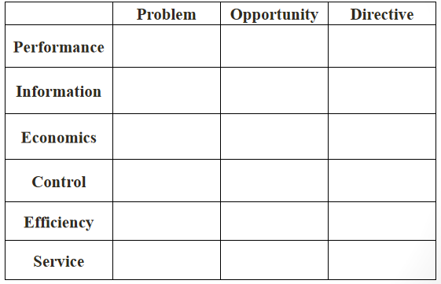Contoh Studi Kasus
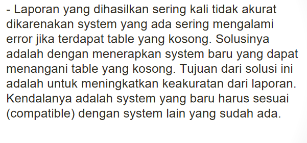Contoh Analisa
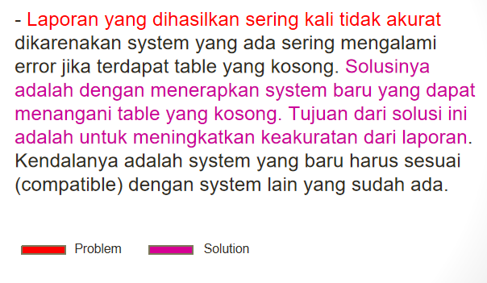Contoh Analisa dalam bentuk tabel
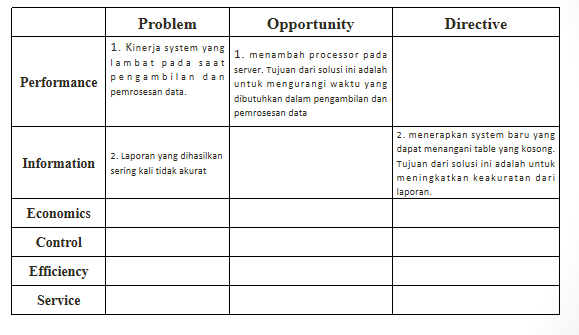Materi 2 : Cause and Effect Analysis
Cause and Effect Anaylisis adalah suatu konsep analisa yang digunakan untuk membantu para analisis dalam memahami permasalahan dan kesempatan untuk menentukan sebab-akibat dalam suatu kejadian ( Event ) , dan untuk menentukan tujuan-tujuan perbaikan sistem.
Cause and Effect Analysis biasanya terdiri dari :
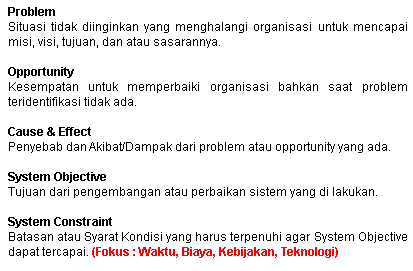Dalam pengerjaan biasanya Cause and Effect Analysis dibuat dalam format tabel seperti dibawah
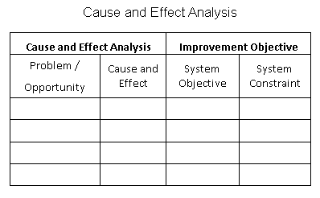Contoh Studi Kasus
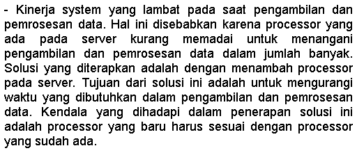Contoh Analisa
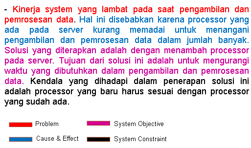Contoh Analisa dalam bentuk tabel
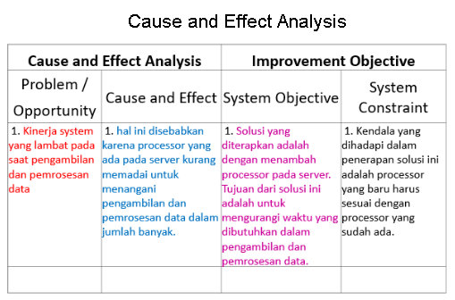Materi 3 : Data Flow Diagram ( DFD )
Data flow diagram adalah diagram yang menggambarkan aliran data melalui suatu proses yang saling berkaitan menggunakan sejumlah bentuk simbol-simbol.
Simbol-simbol dalam Data Flow Diagram ( DFD )
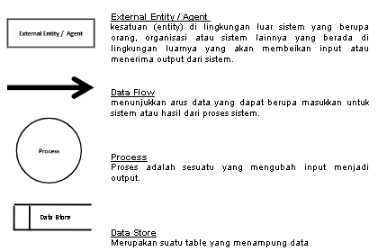Dalam pengerjaan biasanya Data Flow Diagram ( DFD ) terdiri dari 3 tahap :
Level 0
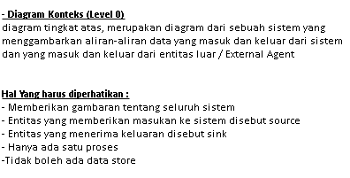Level 1
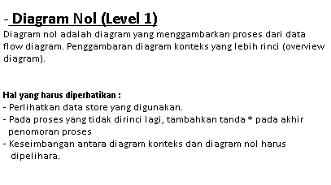Level 2
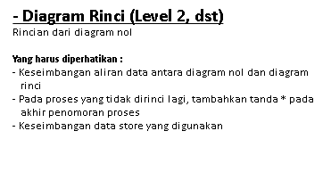Contoh DFD
Level 0
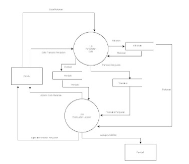Level 1
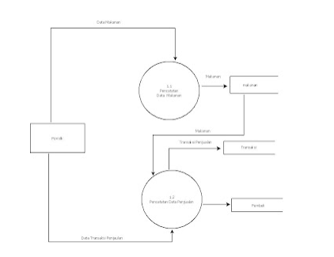Illegal Data Flow
- External Agent ke External Agent
- Data Store ke External Agent
- Data Store ke Data Store
Illegal Data Process
- Blackhole
- Miracle
- Greyhole
Kerjakan Kuis dibawah ini untuk menguji pemahaman anda mengenai materi di atas
Klik Link di siniMateri 1 : Fundamental Digital Marketing
Menurut Dr Philip Kotler pengertian marketing adalah Marketing is that function of the organisation that can keep in constant touch with the organisation's consumers , read their needs, develop products that meet these needs , and build a programme of communications to epress the organisation's purpose.
DIGITAL
Digital is Not Just A Set Of Marketing Channels
Digital is a different way of thinking about how people engage with media, each other , and the world around them.
- Digital is a new way of exploring content ( for users )
- and connecting with customers ( for marketers )
Digital Marketing is the application of digital media , data , and technology integrated with traditional communications to achieve marketing objectives.
A More-In-Depth Definitions
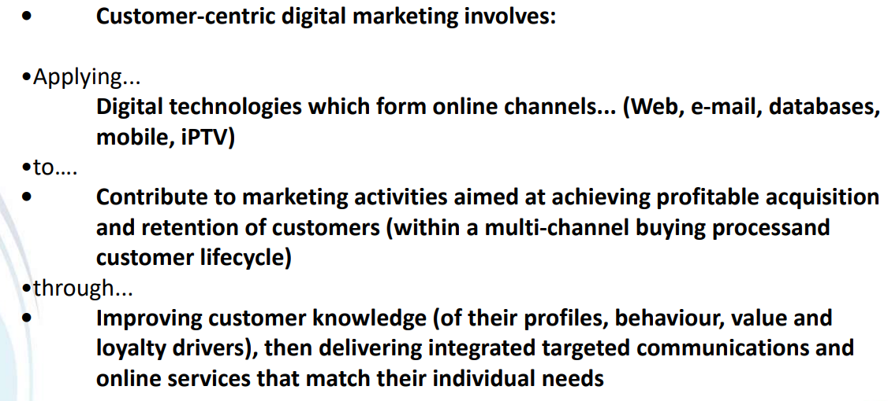Two Fundamental Ways in Digital Marketing
- The audience can be segmented very precisely.
- The digital sphere is almost completly measurable.
Key Features of Digital Marketing Strategy
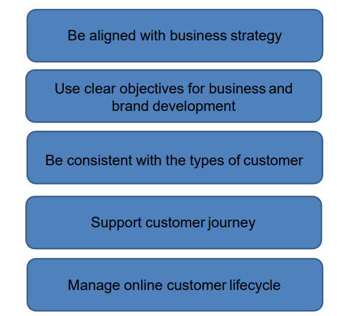Benefits of Digital Media:
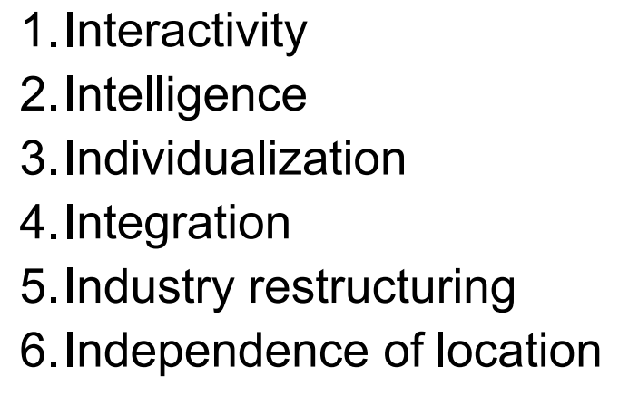Summary
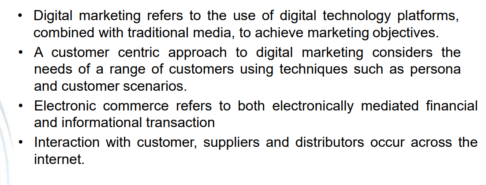Materi 2 : BISNIS ONLINE, AFFILIATE, DROPSIP DAN RESELLER
-
Impact of Electronic Communications on Traditional Business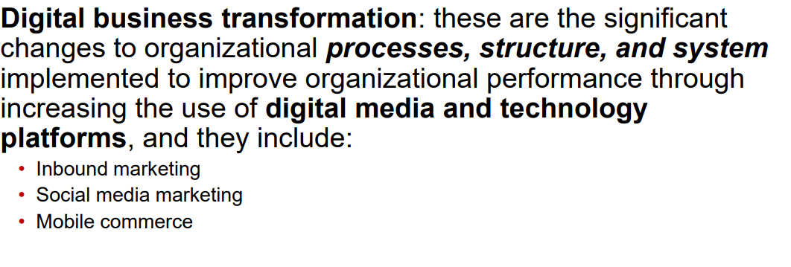
Technological Building Blocks Underlying Digital Business
- Internet
-
World Wide Web
- HTML
- Depp Web vs . "surface" Web
-
Mobile Platform
- Mobile apps
5Ds of Managing Digital Marketing Interactions
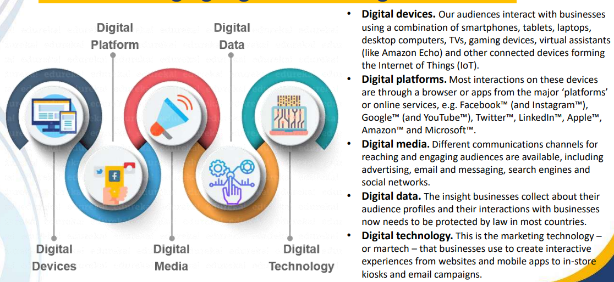
Afiliate Marketing
Afiliate Marketing is a system of rewards whereby referrers are given a 'finder's fee ' for every referral they give (Stokes , 2018).
Performance Marketing
Afiliate Marketing is known as performance marketing (PM)
The Afiiliate Marketing Model
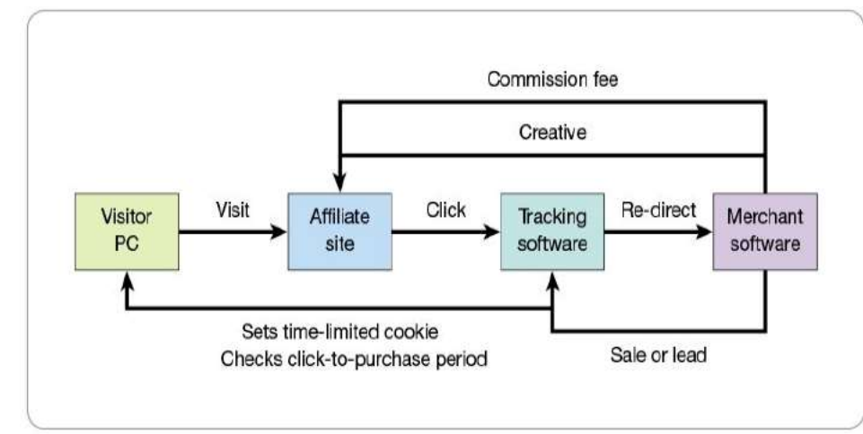Advantages of Afiliate Marketing
Disadvantages of Afiliate Marketing
Dropship
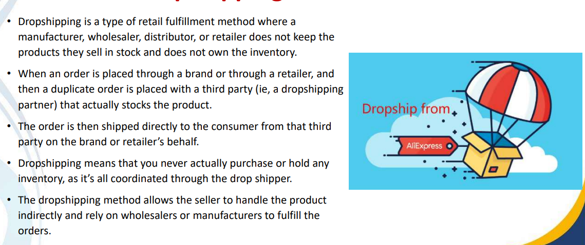Advantages of Dropshipping
- It's cost-effective
- It's time-efficient
- It provides flexibility
Disadvantages of Dropshipping
- Minimal profit margins
- Low barriers to entry
- Supply chain (out of ) control
- Supplier problems become your problems
- Inefficient shipping
- Fullfillment errors that go unsupported
Dropshipping Model
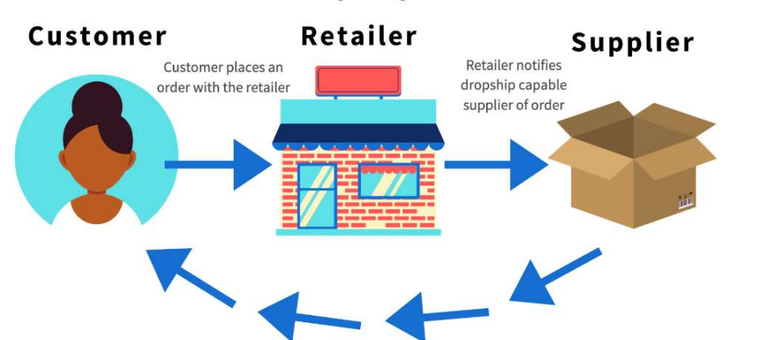Reseller vs Dropshipping
| Reseller | Dropshipping |
|---|---|
| You need to buy it first hen sell it , to make a profit | You find a product whitch can be solt at a higher price |
| Investment is required | Investment is not required |
| Plus you have to be sure that your customers will be satisfied with that product. | - |
| You may lose money on transactions or even on shipping consts if it's a phyical product | - |
| you must be experienced and sure which products or services you buy for resseling and keep in mind this risks | - |
Reseller vs Dropship Model
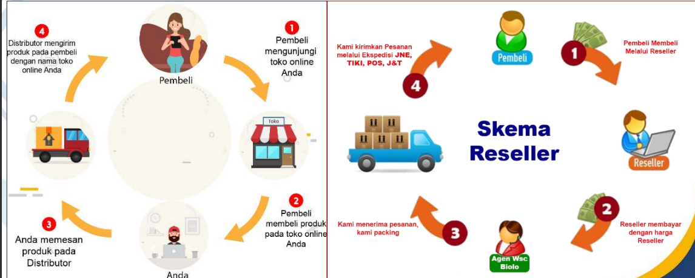Materi 3 : COPYWRITING and AIDA
-
Copywriting : The Basics
- Copywriting is the ability to convince people to take action based on your words. It's essentially a fancy word for persuasion.
- Copywriting can make the difference between a landing page that results in big sales and one that visitors
- The good news is that copywriting is a skill and like all skills , you can master them.
Copywriting is Different
- Copywriting is foucesed on getting the reader to take action
- In some cases , this action might be signing up for your mailing list or following you on social media.
- If your reader does take action , this is called a conversion
Core Principles : Writing for an audience
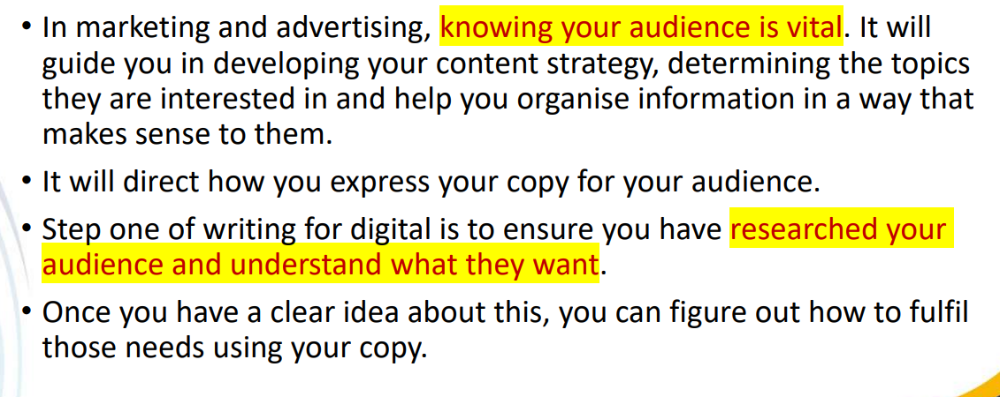
AIDA Framework
Background
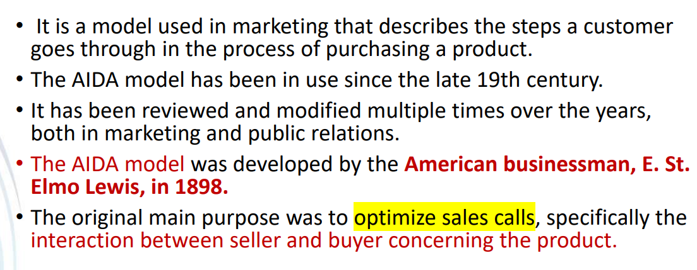AIDA Model
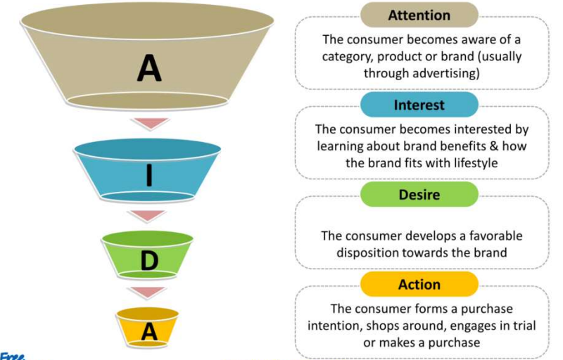Summary
Materi 4 : Ecommerce, E-Marketplace, Website & Landing Page for Digital marketing
-
E-Commerce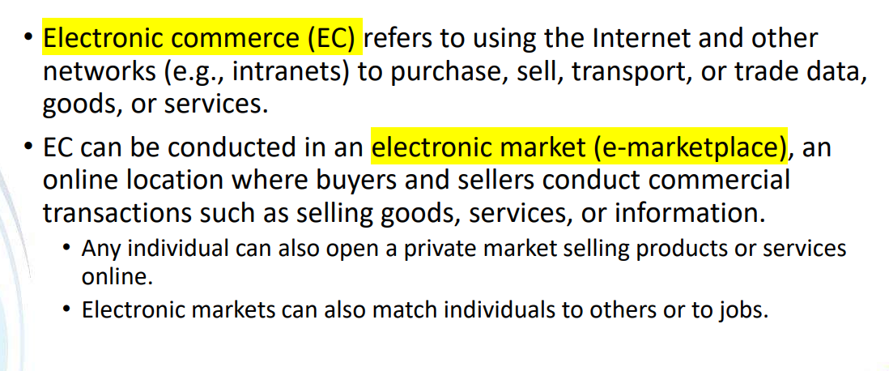
Categories of transactions in e-commerce
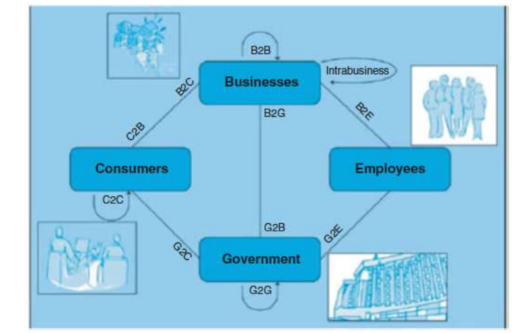Core Principles : Writing for an audience
Electronic Markets ( MarketPlace)
The Components and Participants in E-Marketplaces
Website
Clasified by Purpose
- Promotion sites that promote goods or services.
- Content sites that provide news and entertaiment
- Transaction sites allow consumers to purchase goods and services
5 Ways to determine GOOD Website :
- Strategy
- Usability
- Style
- Content
- Search Optimization
Strategy
Usability
Style

Content
Search Optimization
Materi 5 : Creating Community in Virtual World & Messenger Marketing CHATBOTS
-
Virtual Communities
- Jaringan yang dibuat oleh satu atau sekelompok orang dengan moto yang sama atau minat yang sama di platform media sosial.
- Komunitas virtual menyatukan individu , kelompok , dan bisnis melalui internet tempat mereka berbagi minat yang sama
- Tidak ada batasan geografis atau politik karena komunitas bbertemu atas kepentingan.
- Komunitas virtual merupakan sekelompok individu yang membentuk ikatan melalui komunikasi elektronik.
Characteristic of Virtual communities
- Kurangnya struktur fisik - tidak ada kehadiran fisik
- Ketergantungan pada pengetahuan - kekuatan pendorong utama dadlah pengetahuan
- Penggunaan teknologi Komunikasi - Sangat bergantung pada teknologi informasi
- Pekerjaan keliling - Kebutuhan akan ruang kantor tidak wajib
- Tanpa batas dan inklusif - tidak ada batasan yang didefinisikan dengan jelas
- Fleksibel dan responsif - dibuat untuk mencapai tujuan bisnis tertentu dapat dibongkar setelah tercapai
Advantages of virtual Communities
- Lebih fleksibel - dapat diakses 24/7
- Relevansi mudah - platform untuk berbagi pengalaman kehidupan nyata
- Komunitas - berkembang menjadi komunitas yang mendukung dan memotivasi selama periode waktu tertentu.
- Tanpa batas - tidak ada batasan untuk diskusi
- Pilihan - seseorang dapat membuat komentar atau komentar cepat setelah observasi reflektif
Disadvantages of virtual Communities
- Infomrasi yang berlebihan - sulit dilacak dan menyebabkan stres yang tidak perlu
- Tidak ada dokumen fisik. Komunikasi melalui pesan tanpa dokumentasi percakapan
- Masalah hukum - karena batas antara organisasi menjadi kabur
- Masalah kepercayaan dan rasa hormat - dua elemen yang sangat penting untuk organisasi virtual yang sukses
- Masalah budaya - berbagai budaya di seluruh dunia
- Tanpa arah - ini adalah lingkungan tanpa pemimpin
- Tidak efisien - menghabiskan waktu lebih lama untuk mengetik dan membalas pertanyaan
- Ancaman - pengguna dapat merusak urutan logis dari diskusi
A step - by - step Guide to Launch Virtual Tribe
- Pilih platform untuk komunitas anda.
- Kembangkan kerangka peluncuran.
- Identifikasi pemangku kepentingan internal utama bagi masyarakat.
- Siapkan komunitas anda
- Mulailah peluncuran lunak
- Promosikan komunitas anda
Chatbot
- Chatbot adalah aplikasi kecerdasan buatan (AI ) yang dapat meniru percakapan nyata dengan pengguna dalam bahasa alami mereka.
- Chatbots memugkinkan komunikasi melalui teks atau audio di situs web , aplikasi perpesanan , aplikasi seluler , atau telepon.
- Chatbots menggunakan pembelajaran mesin untuk mengidentifikasi pola komunikasi.
- Dengan interaksi berkelanjutan dengan manusia , mereka belajar untuk meniru percakapan kehidupan nyata dan bereaksi terhadap permintaan lisan atau tertulis , pada gilirannya , memberikan layanan tertentu.
- Karena chatbots menggunakan AI , mereka memahami bahasa , bukan hanya perintah.
Benefits of a Chatbot
- Keterlibatan pelanggan yang lebih baik
- Penghematan biaya
- Melacak mendapatkan wawasan dan data konsumen
- Generasi pemimpin yang sukses , kualifikasi , dan pengasuhan
- Pengoperasian yang mudah di pasar global.
Materi 1 : Machine Learning , Konsep Machine Learning
Machine Learning adalah cabang dari kecerdasan buatan yang berkaitan dengan pengembangan sistem komputer yang dapat belajar dari data , menidentifikasi pola , dan membuat keputusan dengan sedikit atau tanpa campur tangan manusia.
Contoh Penerapan Machine Learning
- Pengenalan wajah
- Mendeteksi spam email
- Rekomendasi produk
- Kendaraan otonom
- Pengenalan ucapan
Konsep Machine Learning
-
Data Training
Data Training berfungsi sebagai materi pembelajaran bagi mesin. Data bisa berupa berbagai jenis seperti teks , gambar , atau suara
-
Model
Model adalah representasi matematis dari pemahaman mesin terhadap data training.
-
Algoritma
Algoritma adalah langkah-langkah atau prosedur yang digunakan untuk mempelajari dan mengekstraksi pola dari data training.
-
Pengujian dan Evaluasi
Data yang tidak digunakan dalam proses training digunakan untuk menguji sejauh mana model dapat menghasilkan prediksi yang akurat.
Materi 2 : Machine Learning , TIpe Machine Learning
Di dalam machine learning terdapat beberapa tipe pembelajaran.
-
Unsupervised Learning
Unsupervised learning adalah salah satu tipe pembelajaran dalam machine learning yang menggunakan sebuah algoritma yang mempelajari struktur dalam data yang tidak memiliki label atau anotasi.
Contoh studi kasus Unsupervised Learning
ketika seseorang membeli sejumlah film tanpa memiliki kategori yang sudah ditetapkan sebelumnya, mereka akan melakukan identifikasi film-film yang mirip berdasarkan berbagai faktor, seperti genre film. Misalnya, jika seseorang memiliki film "Annabelle", mereka mungkin akan menempatkannya dalam kategori film horor berdasarkan karakteristik dan tema yang ditemukan dalam film tersebut. Dengan demikian, unsupervised learning memungkinkan analisis dan pengelompokkan data tanpa adanya panduan atau label yang sudah ada sebelumnya.
-
Semi-Supervised Learning
Semi-supervised learning adalah gabungan dari supervised learning dan unsupervised learning , dimana algoritma menggunakan sejumlah contoh data yang telah dilabeli bersama dengan data yang tidak dilabeli untuk melatih model.
Contoh studi kasus Semi - Supervised Learning
Dengan kata lain, hanya sebagian kecil data yang telah diberi keterangan atau label, sedangkan sebagian besar data masih bersifat tidak berlabel. Pendekatan ini memungkinkan model untuk memanfaatkan informasi dari data yang diberi label untuk meningkatkan kinerja dan keakuratannya, sementara juga mengambil manfaat dari data yang tidak berlabel untuk menemukan pola atau struktur yang lebih luas dalam dataset.
-
Supervised Learning
Supervised Learning adalah pendekatan machine learning yang ditentukan berdasarkan penggunaan dataset berlabel
Contoh studi kasus Supervised Learning
Pengguna dapat memberikan label pada film-film berdasarkan genre tertentu seperti komedi atau horor. Sebagai contoh, jika pengguna telah memberi label pada film "Shrek" dan "Barbie" sebagai film fantasi, serta "Annabelle" dan "Insidious" sebagai film horor, ketika pengguna membeli film baru, mereka akan mengidentifikasi genre dan konten film tersebut. Kemudian, berdasarkan identifikasi tersebut, film baru tersebut akan disimpan dalam kategori yang sesuai, sesuai dengan label yang telah ditetapkan sebelumnya.
Materi 3 : Machine Learning , Tahapan Machine Learning
Di dalam machine learning terdapat beberapa tahapan.
-
Identifikasi Data ( Identify the data )
Identifikasi data adalah proses awal dalam membuat rancangan machine learning. Langkah pertama yaitu mengidentifikasi masalah yang ingin dipecahkan , dengan cara pendekatan logis dan matematis. Mengidentifikasi data dapat digunakan untuk membuat pertanyaan dasar, agar alur yang telah dibuat tidak keluar dari topik awal pembahasan.
-
Persiapkan Data ( Prepare Data )
Data sangat berperan dari pembuatan model machine learning. Semakin banyak data yang disiapkan, semakin valid output yang dihasilkan oleh machine learning. Dalam pengumpulan data, terdapat dua metode yaitu data mining dan web scrapping.
-
Memilih Alogratima Machine Learning (ML) ( Select ML Algorithm )
Memilih algoritma yang cocok untuk menangani problem yang muncul. Berikut beberapa metode algoritma yang bisa digunakan seperti supervised learning untuk memprediksi masa depan. Sedangkan reinforcement learning yaitu proses pengambilan keputusan
-
Pembagian Data ( Split Data )
Proses pembagian data agar memudahkan dalam proses selanjutnya . Dengan data yang dibagi ini model machine learning mudah untuk diidentifikasi.
-
Melatih ( Train )
Proses ini digunakan untuk melatih tubuh machine learning dengan mengisikan data yang sudah diproses.
-
Evaluasi ( Evaluate )
Proses ini digunakan untuk memeriksa apakah datanya yang dimasukkan sudah benar.
-
Prediksi ( Predict )
Proses ini merupakan uji coba apakah machine learning yang telah kita buat bekerja dengan baik. Caranya dengan melihat hasil atau prediksi yang dihasilkan.
-
Membangun ( Deploy )
Proses ini langsung menerapkan kepada masalah. Tentunya untuk melihat prediksi dari data yang ada .
Materi 4 : Machine Learning , Keamanan data di dalam Machine Learning
Keamanan data di dalam machine learning menjadi semakin penting seiring dengan pertumbuhan dan penggunaak teknologi ini. Terdpaat beberapa isu keamanan data yang perlu dipertimbangkan dalam lingkup machine learning
-
Privasi Data
Data yang digunakan dalam machine learning seringkali mengandung informasi sensitif tentang individu atau organisasi. Penting untuk menjaga privasi data ini dan memastikan bahwa data tidak disalah gunakan atau diakses oleh pihak yang tidak berwenang.
-
Pengamanan Model
Model di dalam machine learning dapat menjadi target serangan yang bertujuan untuk mempengaruhi hasil atau mengeksploitasi kelemahan dalam model.
-
Serangan Adversarial
Serangan adversarial adalah serangkaian teknik yang dirancang untuk memanipulasi model machine learning dengan cara memberikan input yang dimodifikasi secara sengaja untuk menghasilkan prediksi yang salah.
-
Kebocoran informasi
Kebocoran informasi terjadi ketika model machine learning engungkapkan informasi rahasia atau sensitif tentang data pelatihan yang mungkin tidak seharusnya diketahui oleh pengguna model.
-
Penanganan data yang tidak aman
Proses pengumpulan , penyimpanan , dan pemrosesan data dalam lingkungan machine learning harus memenuhi standar keamanan yang tinggi untuk mencegah akses yang tidak sah atau kebocoran data.
-
Penghapusan data yang aman
Ketika data tidak lagi diperlukan untuk proses machine learning , penting untuk menghapus data tersebut dengan aman untuk mencegah potensi kebocoran atau penyalahgunaan data di masa depan.
-
Kapatuhan Regulasi
Kepatuhan terhadap regulasi data seperti GDPR di Uni eropa atau HIPAA di Amerika Serikat adalah penting dalam konteks machine learning terutama ketika data yang digunakan adalah data pribadi atau sensitif.
Materi 5 : Machine Learning , Data Cleaning di dalam Machine Learning
Data Cleaning adalah sebuah proses membersihkan data dari data yang korup , data yang tidak lengkap , dan data yang salah di dalam sebuah dataset.
Tahapan dalam melakukan Data Cleaning
- Menghapus data yang duplikat dan tidak relevan dengan observasi yang dilakukan.
- Memperbaiki struktur data yang salah
- Menyaring data yang tidak diperlukan yang bersifat menyimpang
- Menangani Data yang hilang
- Melakukan Validasi dan QA ( Quality Assurance )